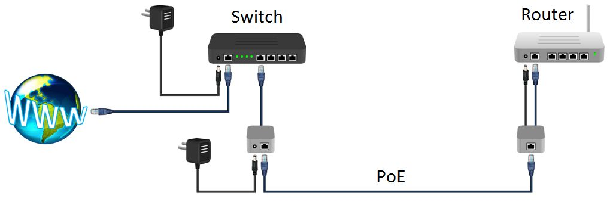
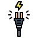

Cableado
Cable de par entrelazado
Este cable está formado por 4 pares de hilos entrelazados, según su calidad (sobre todo por la cantidad de vueltas para evitar interferencias) se divide en diferentes categorías:
- Cat 5 es muy vieja, hasta 100 Mbps.
- Cat 5e es la más común, soporta 1000 Mbps.
- Cat 6 trabajan bien los 1000 Mbps.
- Cat 6a pueden aguantar 10000 Mbps = 10Gbps.
- Cat 7 son los que se utilizan 10 gigabit ethernet.
- Cat 7A igual pero con una frecuencia de 1000MHz
- Cat 8 compatible con frecuencias 2000 MHz y 40 Gbps.
PROBLEMA : En mi centro Internet va lento y tengo un cableado Cat5 ¿tengo que hacer una inversión de cambiar todo el cableado?
La respuesta es que seguramente NO ES NECESARIO pues de nada sirve cambiar a una categoría superior si la conexión de Internet es lenta, los switch no soportan esas velocidades y lo más común: Las tarjetas de red no aguantan velocidades por encima de los 100Mps. Además van a salir nuevos protocolos que permitirán velocidades de Gbps con cableado Cat5.
Recuerdo un centro, de cuyo nombre no me quiero acordar, que realizó un importante esfuerzo económico de cambiar todo el cableado y la velocidad seguía siendo pésima. Al final era porque tenían una Botnet ver diapositiva 8.
Para estas cuestiones es mejor contar con el asesoramiento del servicio de informática del Departamento.
No se tienen que hacer cableados muy largos pues la señal se atenúa, cuanto más largo más probabilidad hay que algunos paquetes de información sean erróneos y por lo tanto ralentiza la conexión. El máximo es 100m.
RJ45
Es la interfaz que conecta nuestro cableado.

Fuente Wikipedia
No podemos conectar dos ordenadores con un cable normal o directo, sino es a través de un Switch o Hub, la razón es que los cables se tienen que cruzar es decir el pin de transmisión tiene que ir al de recepción del otro y viceversa. Esto lo hace el Switch o Hub. Hay cables especiales llamados cruzados que ya están conectados el RJ45 de forma cruzada y sólo sirven para este propósito.
Suele ser un elemento muy castigado si el PC donde está conectado no está fijo o está en una mesa con ruedas luego suele ser un punto crítico ante problemas de conexión:
PROBLEMA: NO VA INTERNET en un equipo concreto conectado por cable.
Primero valoraremos si hay o no conexión entrando en Panel de control - Redes e Internet - Conexiones de red:

Si encontramos que no hay conexión o no hay tráfico, el problema puede ser que el cable con RJ25 está estropeado. Una comprobación simple de cambiar el cable puede ahorrarnos tiempo.
Si quieres, son útiles los comprobadores de cable que por menos de 10€ se pueden comprar en proveedores online Aliexpress o Amazon.

Metes los dos extremos (uno master que envía la señal y otro slave que recoge la señal y lo visualiza en forma de luces) y tienen que encenderse las luces en su mismo órden tanto en un extremo como en el otro 1-1 2-2 3-3 ... 8-8 si hay algún fallo ya podemos desechar ese cable. En el siguiente vídeo explica cómo se testea.
Si quieres hacer tú mismo el cables hay muchos vídeos, cómprate una crimpadora y es seguir un criterio de colores.
PREGUNTA: ¿Se puede comprobar un cable con el tester teniendo un extremo en el tester y el otro extremo conectado a una "cosa" (router, switcht, AP, PC...) ?
Respuesta: Pues no, si introduces el extremo suelto en el master del tester que envía la señal (inyecta voltios), te cargas esa "cosa" en el otro extremo. En resumen: si tienes que comprobar un cable, asegúrate que tenga los dos extremos desconectados.
PREGUNTA: ¿Qué conexión es mejor la conexión por cable o la conexión por Wifi?
Respuesta: La conexión cableada siempre nos va a dar más velocidad, fiabilidad y conexión segura frente a la wifi. La wifi la tenemos que dejar cuando no hay otro remedio (aula con tablets, carro de portátiles, etc...)
POE
Los cables POE (Power Over Internet) son cables entrelazados pero están conectados a un Switch que tiene puertos que además de transmitir los datos, transmiten también la alimentación, de tal manera que el dispositivo destino puede alimentarse con sólo llegar el cable entrelazado (es típico en teléfonos IPs, WebCams y APs)
 Fuente Ali-express
Fuente Ali-express
Esto nos facilita la instalación de estos dispositivos pues sólo hay que llevar un cable entrelazado. En los centros que no tenían switch con POE se repartían estos dispositivos para crear un cable POE: (un mezclador data+power y un separador data+power marca D-Link)

Y el esquema era el siguiente, donde el Router blanco de la derecha es cualquier dispositivo que por cuestiones físicas no se puede instalar hasta allí un cable de alimentación por que está en un lugar difícil, en el techo etc..:
 Fuente https://www.instructables.com/
Luego si en tu centro ves un AP con esta conexión es porque el cable que sale de la caja es POE:

Fuente Wikipedia
OJO fíjate que NO SE CONECTA DIRECTAMENTE sino a través del separador D-Link.
Hay dispositivos que en la conexión hembra RJ45 pone Data o NonPOE y otros que pone Data+Power o POE en la foto anterior el AP Punto de acceso es NonPOE por lo tanto necesita el separador, es fácil saber que es NonPOE pues tiene un conector de alimentación (cable negro de la foto) si fues POE no lo tendría.
¿Por qué tengo que saber esto? Porque si conectas un cable POE a un dispositivo no POE lo puedes estropear pues estás conectando unos voltios a la tarjeta red que no está preparado.
Puedes hacer un desastre si conectas un portátil a un cable POE, o peor todavía: simplemente hacer de manitas en el Switch de conserjería e intercambias cables en los puertos del Switch, y no te das cuenta que unos son POE y otros NonPOE.
Luego ojo con este símbolo:


Fibra óptica
Es un cableado formado por filamentos transparentes donde viaja la luz por medio de rebotes entre las paredes. Al ser luz, se puede trabajar con frecuencias mucho mayores sin casi pérdidas por lo que aumenta la velocidad de transmisión. El problema es que las conexiones no son tan fáciles como en el RJ45.
De momento sólo se utiliza a nivel de WAN es decir de entrada en el router en las localidades donde llega la fibra óptica. En la LAN se trabaja con cable trenzado.

Resolución de problemas por Javier Quintana Peiró bajo licencia Creative Commons Reconocimiento-NoComercial-CompartirIgual 4.0 Internacional License.